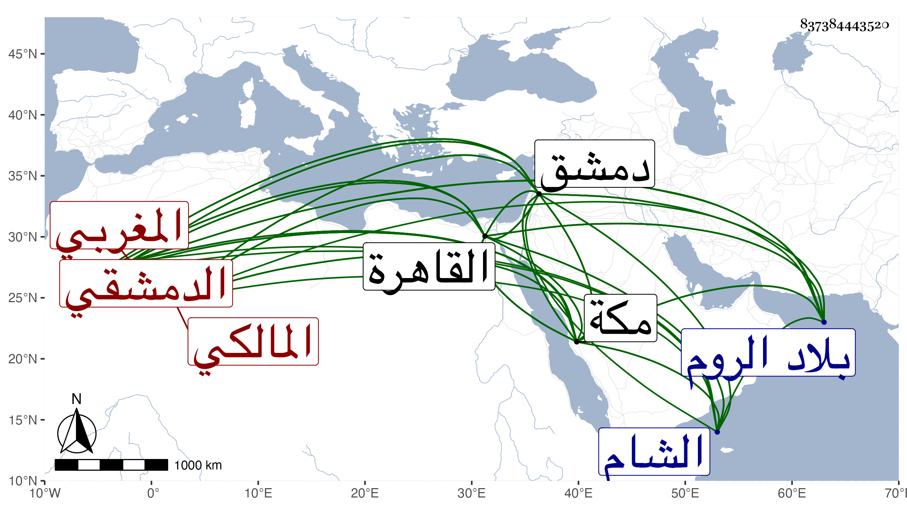

0902Sakhawi.DawLamic.ITO20230111-ara1.EIS1600.837384443520
Biography ID: 837384443520
337
عبد النبي بن محمد بن عبد النبي المغربي ثم الدمشقي المالكي . فاضل دخل الروم فاشتغل بها ثم قطن دمشق واجتمع على البقاعي حين كان بها فأخذ عنه وصار إليه بعده معلومه في الجوالي ولما دخل خير بك من حديد الشام بطالا انتمى إليه ثم سافر معه لمكة . وأقرأ بها في أصول الدين وغيره قليلا لمبتدئ الطلبة وانتمى لعبد المعطي وحضر موت أميره وأوصى له بشيء فكان باعثا لدخوله القاهرة فأقام بجامع الأزهر قليلا القاهرة متقللا ولاطفه المظفر الأمشاطي ثم عاد لدمشق وصار أحد شيوخها القائمين بإقراءالعقليات وغيرها ودرس ببعض مدارسها نيابة وربما تكلم في إزالة بعض ما يرى إنكاره ، وقد عدته بالقاهرة بل تكرر اجتماعنا بمكة والغالب عليه الخير والعقل ثم قدم مكة في بحر سنة سبع وتسعين فحج وجاور التي تليها وأقرأ الطلبة وتكرر اجتماعه بي وكان كثير التوعك ويقال أنه امتنع من قضاء دمشق بالبذل مع تلفت له فيما يقال مجانا دام النفع به .
